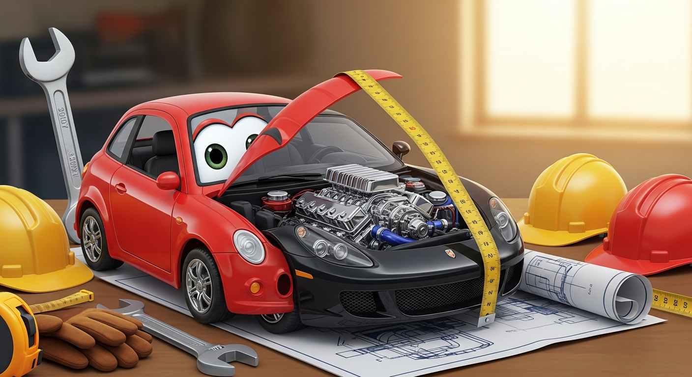

When AI writes the code, documentation changes its job. It is no longer only there to explain what was built; it is there to control what gets generated in the future. Three new needs emerge: 1) Tell AI what humans mean—preserve informal rules like "never optimize fraud checks away" that humans understood implicitly; 2) Tell next AI what the last AI did—provide context about what was generated, reviewed, or remains uncertain; 3) Tell people what to trust—explicit trust records showing what changed, how it was produced, and what risks remain. When code becomes cheap to produce, judgment becomes the valuable artifact.
Transitioning from prototype to production requires coordinated handoff between all three disciplines: AI PM decides which prototype features are worth production investment based on user value and strategic priority; Vibe-Coding continues during transition to generate refactored versions, test coverage, and documentation while the prototype is still fresh; AI Engineering takes ownership of code quality, establishes testing patterns, and builds the infrastructure that makes the transition sustainable.

Objective: Learn to transition from AI-generated prototypes to production-ready code.
Chapter Overview
This chapter covers code quality uplift, test generation, architectural hardening, and preparing for team handoff. You will learn systematic approaches to transforming working prototypes into production-ready codebases.
Four Questions This Chapter Answers
- What are we trying to learn? How to bridge the gap between a working prototype and production-ready code without losing the speed advantages of AI-assisted development.
- What is the fastest prototype that could teach it? Taking one vibe-coded prototype through quality uplift, test generation, and architectural hardening to see the true cost of production readiness.
- What would count as success or failure? Code that passes team code review standards and can be maintained by engineers who did not write it.
- What engineering consequence follows from the result? Teams must budget time and skill for the prototype-to-production transition; treating it as trivial leads to accumulated debt.
Learning Objectives
- Apply systematic code quality uplift
- Generate effective tests for AI-generated code
- Address architectural debt from prototyping
- Prepare for team handoff and onboarding
Sections in This Chapter
- 14.1 Code Quality Uplift Systematic approaches to improving prototype code for production readiness
- 14.2 Test Generation Testing AI-generated code using AI-assisted test generation
- 14.3 Architectural Hardening Addressing architectural debt and improving code structure
- 14.4 Preparing for Team Handoff Documentation, knowledge transfer, and establishing team conventions